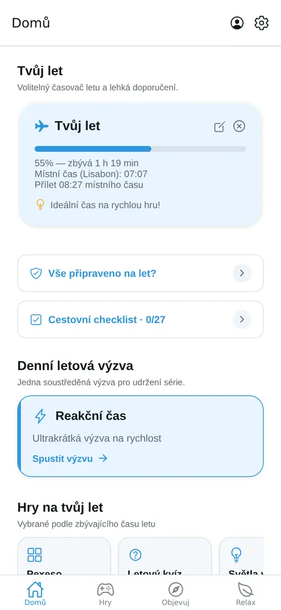
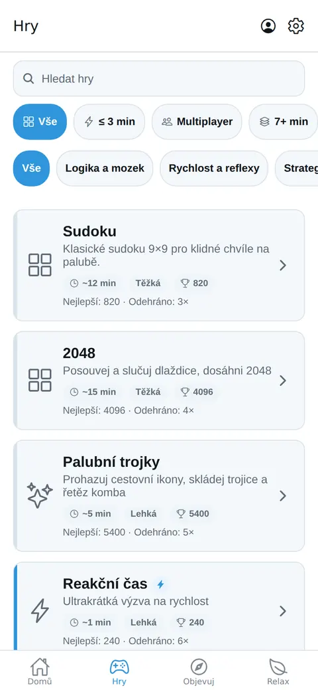
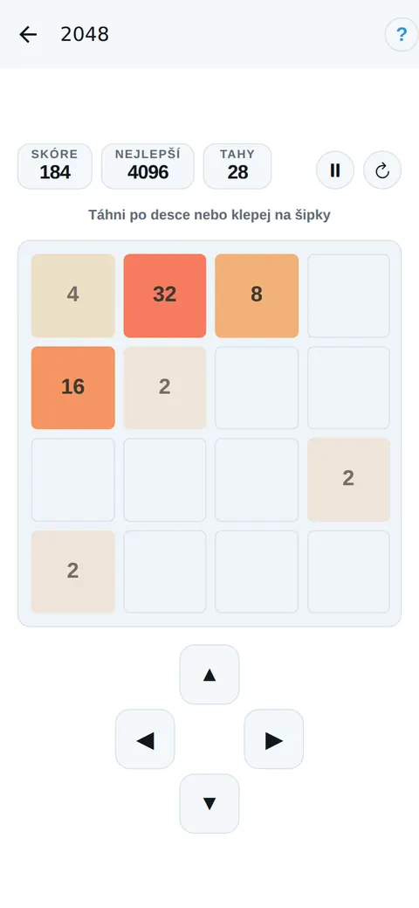
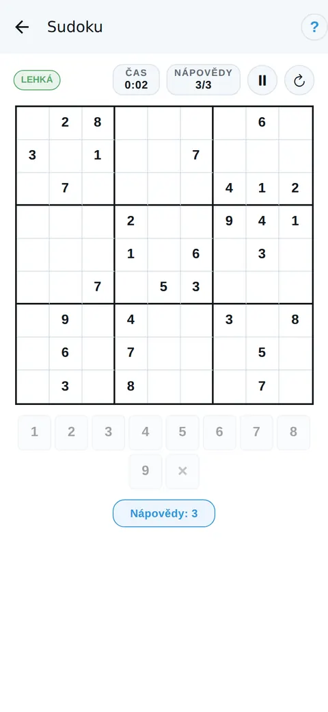
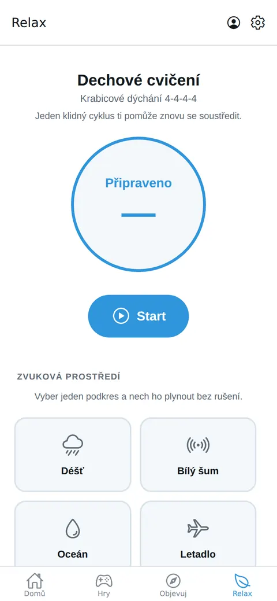
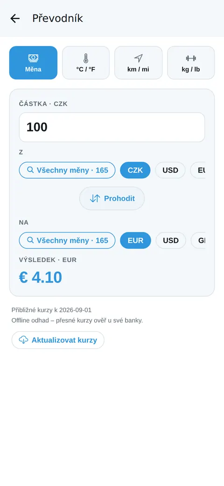
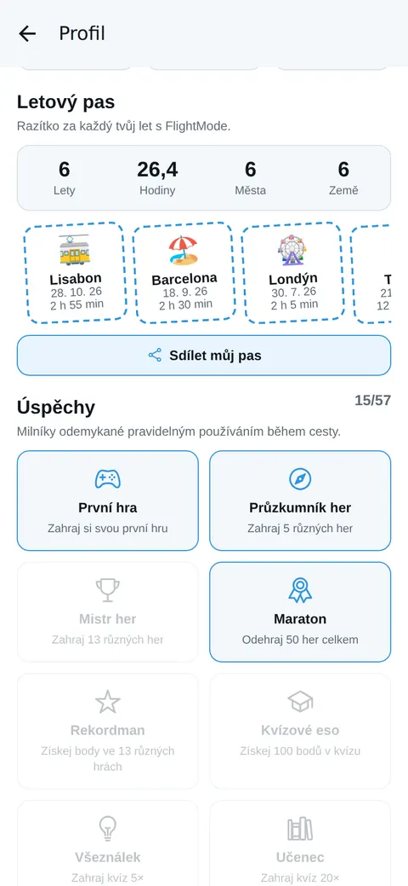

Aplikace, kterou si stáhneš před letem
Přepni telefon do režimu letadlo a všechno funguje dál: 47 her, uklidňující zvuky, cestovní články a praktické pomůcky, vše 100% offline.
Stáhni naGoogle PlayZdarma · Android · Bez reklam · Bez účtu · 12 jazyků

Všechno na let, nic z toho nepotřebuje Wi-Fi
Stáhni si ji u gatu, používej ji v 10 000 metrech.
-
47 offline her
Sudoku, Mahjong, Pasiáns, 2048, Hledání min, Palubní trojky s 30 úrovněmi, Hádej slovo, Rozbij krabice, Žrout v bludišti a další. Denní výzva ti udrží sérii.
-
Hraj se spolucestujícím
Jeden telefon, 2–6 hráčů: piškvorky, čtyři v řadě, Letecký radar, Lhářovy kostky, Kategorie na čas, Turbulentní příběhy a další hry, kde si telefon předáváte.
-
Relax a spánek
Déšť, oceán a bílý šum hrají i se zhasnutou obrazovkou. K tomu dechové cvičení a časovač spánku.
-
Cestovní pomůcky offline
Odpočet letu s průběhem a plán proti jet lagu, čas v cíli, konverzační fráze, převodník měn a jednotek, seznam na balení a cestovní články.
-
Letový pas
Razítko za každou cestu s FlightMode. Lety, hodiny ve vzduchu, města a země máš přehledně na jednom místě.
-
12 jazyků, bez reklam, bez účtu
Žádná registrace a žádné reklamy. Tvoje skóre, lety a nastavení zůstávají v telefonu.
Jak to vypadá
Snímky obrazovky aplikace (česky, světlý motiv).

47 her s vyhledáváním a filtry 
Rozehraná 2048 
Sudoku 
Dechové cvičení a zvuky 
Převodník měn a jednotek 
Letový pas a úspěchy
Časté otázky
Krátké odpovědi na to, na co se lidi ptají nejčastěji.
Opravdu to funguje offline?
Ano. Všechny hry, relaxační zvuky, články i cestovní pomůcky fungují v režimu letadlo. Když jsi online, aplikace může volitelně stáhnout nové články a aktuální kurzy měn. V Nastavení to můžeš omezit jen na Wi-Fi nebo úplně vypnout.
Je zdarma?
Ano. Všechno, co je popsané na téhle stránce, je zdarma, bez reklam a bez účtu. Volitelné nákupy v aplikaci (FlightMode Plus a spropitné) jen přidávají něco navíc.
Co je FlightMode Plus?
Volitelný jednorázový nákup, kterým podpoříš vývoj. Teď odemyká dva další motivy (Půlnoc a Západ slunce) a odznak v profilu. Nic, co je zdarma, se za Plus nikdy neschová.
Jaké jazyky aplikace umí?
12: češtinu, angličtinu, němčinu, španělštinu, francouzštinu, italštinu, polštinu, portugalštinu, hindštinu, japonštinu, korejštinu a čínštinu. Některé cestovní články jsou v menším počtu jazyků, jinak se zobrazí anglicky.
Je i verze pro iPhone?
Zatím ne. FlightMode je zatím jen pro Android.
Jaká data aplikace sbírá?
Tvoje lety, skóre a nastavení zůstávají v zařízení. Volitelné anonymní statistiky používání můžeš vypnout v Nastavení. Podrobnosti najdeš v zásadách ochrany soukromí.
Nainstaluj si ji ještě před nástupem
Ve vzduchu už se do Obchodu Play nedostaneš.
Stáhni naGoogle Play